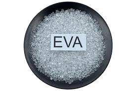

ETIL VINIL ACETATO

El etilvinilacetato (conocido también como goma EVA, foamy, foami, fomi, espumoso o EVA foam) es un polímero termoplástico conformado por unidades repetitivas de etileno y acetato de vinilo. Se le llama EVA por las siglas de su nombre técnico, etileno-vinil-acetato. También es conocido por su nombre más genérico en inglés, foamy (literalmente «espumoso»), que es el nombre utilizado en más de treinta países.[cita requerida] Es un material que combina con cualquier accesorio o producto de aplicación directa o superpuesta. Es un material que no sustituye a ninguno conocido, sino que por el contrario, lo complementa.